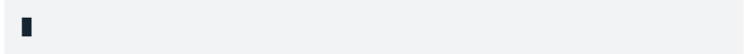

Introduction
The cli package helps you build a command line interface (CLI) without getting lost in details (colors, wrapping, spacing, etc.) of how each piece of the output is formatted. Instead, you can build command line output from semantic elements: lists, alerts, quotes code blocks, headers, etc. The formatting of each element is specified separately, in one or more cli themes. cli comes with a builtin theme, and if you are satisfied with that, then you never need to worry about formatting. A semantic cli is similar to how HTML and CSS work together to create a web site.
In this introduction we will go over the functions that create semantic CLI elements, and also some common features of them.
Building a command line interface
To build a CLI, you can simply start using the cli_*
functions to create various CLI elements. Their exact formatting depends
on the current theme, see ‘Theming’ below.
Alerts
Alerts are typically short messages. cli has four types of alerts (success, info, warning, danger) and also a generic alert type:
cli_alert_success("Updated database.")
#> ✔ Updated database.
cli_alert_info("Reopened database.")
#> ℹ Reopened database.
cli_alert_warning("Cannot reach GitHub, using local database cache.")
#> ! Cannot reach GitHub, using local database cache.
cli_alert_danger("Failed to connect to database.")
#> ✖ Failed to connect to database.
cli_alert("A generic alert")#> → A generic alert
Text
Text is automatically wrapped to the terminal width.
cli_text(cli:::lorem_ipsum())#> Lorem ad ipsum veniam esse nisi deserunt duis. Qui incididunt elit elit mollit #> sint nulla consectetur aute commodo do elit laboris minim et. Laboris ipsum #> mollit voluptate et non do incididunt eiusmod. Anim consectetur mollit laborum #> occaecat eiusmod excepteur. Ullamco non tempor esse anim tempor magna non.
Text may have ANSI style markup,
Paragraphs
Paragraphs break the output. The default theme inserts an empty line before and after paragraphs, but only a single empty line is added between two paragraphs.
fun <- function() {
cli_par()
cli_text("This is some text.")
cli_text("Some more text.")
cli_end()
cli_par()
cli_text("Already a new paragraph.")
cli_end()
}
fun()#> This is some text. #> Some more text. #> #> Already a new paragraph. #>
cli_end() closes the latest open paragraph (or other
open container).
Auto-closing containers
If a paragraph (or other container, see ‘Generic containers’ later),
is opened within a function, cli automatically closes it at the end of
the function, by default. So in the previous example the last
cli_end() call is not needed. Use
.auto_close = FALSE in cli_par() to leave the
paragraph open after its calling function returns.
Headings
cli supports three levels of headings. This is how they look in the
default theme. The default theme adds an empty line before headings, and
an empty line after cli_h1() and cli_h2().
cli_h1("Heading 1")#> ── Heading 1 ───────────────────────────────────────────────────────────────────
cli_h2("Heading 2")
#>
#> ── Heading 2 ──
#>
cli_h3("Heading 3")#> ── Heading 3
Interpolation
All cli text is treated as a glue template, with special formatters available (see the ‘Inline text formatting’ Section):
size <- 123143123
dt <- 1.3454
cli_alert_info(c(
"Downloaded {prettyunits::pretty_bytes(size)} in ",
"{prettyunits::pretty_sec(dt)}"))
#> ℹ Downloaded 123.14 MB in 1.3s
Inline text formatting
To define inline markup, you can use the regular glue braces, and
after the opening brace, supply the name of the markup formatter with a
leading dot, e.g. for emphasized text, you use .emph. Some
examples are below, see ?"inline-markup" for details.
fun <- function() {
cli_ul()
cli_li("{.emph Emphasized} text")
cli_li("{.strong Strong} importance")
cli_li("A piece of code: {.code sum(a) / length(a)}")
cli_li("A package name: {.pkg cli}")
cli_li("A function name: {.fn cli_text}")
cli_li("A keyboard key: press {.kbd ENTER}")
cli_li("A file name: {.file /usr/bin/env}")
cli_li("An email address: {.email bugs.bunny@acme.com}")
cli_li("A URL: {.url https://acme.com}")
cli_li("An environment variable: {.envvar R_LIBS}")
cli_li("Some {.field field}")
}
fun()#> • Emphasized text #> • Strong importance #> • A piece of code: `sum(a) / length(a)` #> • A package name: cli #> • A function name: `cli_text()` #> • A keyboard key: press [ENTER] #> • A file name: /usr/bin/env #> • An email address: bugs.bunny@acme.com #> • A URL: <https://acme.com> #> • An environment variable: `R_LIBS` #> • Some field
To combine inline markup and string interpolation, you need to add another set of braces:
dlurl <- "https://httpbin.org/status/404"
cli_alert_danger("Failed to download {.url {dlurl}}.")#> ✖ Failed to download <https://httpbin.org/status/404>.
"val" is a special inline style, that in the default
theme calls cli_format() to tailor the conversion of values
to strings. The conversion can be themed, see “Theming” below.
cli_div(theme = list(.val = list(digits = 2)))
cli_text("Some random numbers: {.val {runif(4)}}.")
cli_end()#> Some random numbers: 0.07, 0.1, 0.32, and 0.52.
Inline lists of items
When cli performs inline text formatting, it automatically collapses glue substitutions, after formatting. This is handy to create lists of files, packages, etc.
#> Packages: pkg1, pkg2, and pkg3.
#> Packages: pkg1, pkg2, and pkg3
By default class names are collapsed differently:
#> Hey `x` has class <POSIXct/POSIXt>
Non-breaking spaces
Use \u00a0 to create a non-breaking space. E.g. in here
we insert some non-breaking spaces, and mark them with an
X, so it is easy to see that there are no line breaks at a
non-breaking space:
# Make some spaces non-breaking, and mark them with X
txt <- cli:::lorem_ipsum()
mch <- gregexpr(txt, pattern = " ", fixed = TRUE)
nbs <- runif(length(mch[[1]])) < 0.5
regmatches(txt, mch)[[1]] <- ifelse(nbs, "X\u00a0", " ")
cli_text(txt)#> Qui mollit anim est in deserunt adipisicing nostrud duis enimX deserunt.X Ad #> quiX quiX magna animX esse non anim magnaX Lorem.X Dolore laboreX cupidatat #> magnaX etX officiaX etX esse nullaX eiusmod Lorem #> exercitationX cupidatatX velitX enim. NostrudX elit id laborum #> dolore.X LoremX esse ea sint proident eu officiaX nisiX fugiat mollit in #> LoremX velit. Exercitation ipsum consectetur ad nisiX utX eu.
Lists
cli has three types of list: ordered, unordered and definition lists,
see cli_ol(), cli_ul() and
cli_dl():
#> 1. item 1 #> 2. item 2 #> 3. item 3
#> • item 1 #> • item 2 #> • item 3
#> item 1: description 1 #> item 2: description 2 #> item 3: description 3
Item text is wrapped to the terminal width:
#> • Officia ad. #> • Minim velit ullamco cupidatat eu ipsum adipisicing ea dolore ipsum consequat #> id irure irure nulla ea nostrud consequat dolor magna commodo proident #> excepteur ullamco est consectetur do quis laboris tempor in laboris Lorem id #> laboris exercitation culpa voluptate deserunt.
Adding list items iteratively
Items can be added one by one:
fun <- function() {
lid <- cli_ul()
cli_li("Item 1")
cli_li("Item 2")
cli_li("Item 3")
cli_end(lid)
}
fun()#> • Item 1 #> • Item 2 #> • Item 3
The cli_ul() call creates a list container, and because
its items are not specified, it leaves the container open. Then items
can be added one by one. (The last cli_end() is not
necessary, because by default containers auto-close when their calling
function exits.)
Adding text to an item iteratively
cli_li() creates a new container for the list item,
within the list container. You can keep adding text to the item, until
the container is closed via cli_end() or a new
cli_li(), which closes the current item container, and
creates another one for the new item:
fun <- function() {
cli_ul()
cli_li("First item")
cli_text("This is still the first item")
cli_li("This is the second item")
}
fun()#> • First item #> This is still the first item #> • This is the second item
Nested lists
To create nested lists, open nested containers:
fun <- function() {
cli_ol()
cli_li("Item 1")
ulid <- cli_ul()
cli_li("Subitem 1")
cli_li("Subitem 2")
cli_end(ulid)
cli_li("Item 2")
cli_end()
}
fun()#> 1. Item 1 #> • Subitem 1 #> • Subitem 2 #> 2. Item 2
In cli_end(olid), the olid is necessary,
otherwise cli_end() would only close the container of the
list item.
Horizontal rules
cli_rule() creates a horizontal rule.
cli_rule(left = "Compiling {.pkg mypackage}")
#> ── Compiling mypackage ─────────────────────────────────────────────────────────
You can use the usual inline markup in the labels of the rule. The rule’s appearance is specified in the current theme. In particular:
-
beforeis added before the rule. -
afteris added after the rule. -
coloris used for the color of the rule and the labels. (Use color within the label text for a different label color.) -
background-color: is the background color for the rule and the labels. (Again, you can use a different background color within the label itself.) -
margin-top,margin-bottomfor empty space above and below the rule. -
line-typespecifies the line type of the rule. See?cli_rulefor line types.
The status bar
cli supports creating a status bar in the last line of the console, if the terminal supports the carriage return control character to move the cursor to the beginning of the line. This is supported in all terminals, in RStudio, Emacs, RGui, R.app, etc. It is not supported if the output is a file, e.g. typically on CI systems.
cli_status() creates a new status bar,
cli_status_update() updates a status bar, and
cli_status_clear() clears it. cli_status()
returns an id, that can be used in cli_status_update() and
cli_status_clear() to refer to the right status bar.
While it is possible to create multiple status bars, on a typical terminal only one of them can be shown at any time. cli by default shows the one that was last created or updated.
While the status bar is active, cli can still produce output, as normal. This output is created “above” the status bar, which is always kept in the last line of the screen. See the following example:
f <- function() {
cli_alert_info("About to start downloads.")
sb <- cli_status("{symbol$arrow_right} Downloading 10 files.")
for (i in 9:1) {
Sys.sleep(0.5)
if (i == 5) cli_alert_success("Already half-way!")
cli_status_update(id = sb,
"{symbol$arrow_right} Got {10-i} file{?s}, downloading {i}")
}
cli_status_clear(id = sb)
cli_alert_success("Downloads done.")
}
f()Theming
The looks of the various CLI elements can be changed via themes. The cli package comes with a simple built-in theme, and new themes can be added as well.
Tags, ids and classes
Similarly to HTML document, the elements of a CLI form a tree of
nodes. Each node has exactly one tag, at most one id, and optionally a
set of classes. E.g. cli_par() creates a node with a
<p> tag, cli_ol() creates a node with an
<ol> tag, etc. Here is an example CLI tree. It always
starts with a <body> tag with id "body",
this is created automatically.
<body id="body">
<par>
<ol>
<it>
<span class="pkg">A cli theme is a named list, where the names are selectors based on
tag names, ids and classes, and the elements of the list are style
declarations. For example, the style of <h1> tags
looks like this in the built-in theme:
builtin_theme()$h1#> $`font-weight` #> [1] "bold" #> #> $`margin-top` #> [1] 1 #> #> $`margin-bottom` #> [1] 0 #> #> $fmt #> function (x) #> cli::rule(x, line_col = "cyan") #> <bytecode: 0x56111636ef70> #> <environment: 0x561117088640> #>
See also ?cli::themes for the reference and
?cli::simple_theme for an example theme.
Generic containers
cli_div() is a generic container, that does not produce
any output, but it can add a new theme. This theme is removed when the
<div> node is closed. (Like other containers,
cli_div() auto-closes when the calling function exits.)
fun <- function() {
cli_div(theme = list (.alert = list(color = "red")))
cli_alert("This will be red")
cli_end()
cli_alert("Back to normal color")
}
fun()
#> → This will be red
#> → Back to normal color
Theming inline markup
The inline markup formatters always use a <span>
tag, and add the name of the formatter as a class.
fun <- function() {
cli_div(theme = list(span.emph = list(color = "orange")))
cli_text("This is very {.emph important}")
cli_end()
cli_text("Back to the {.emph previous theme}")
}
fun()#> This is very important #> Back to the previous theme
In addition to adding inline markup explicitly, like
.emph here, cli can use the class(es) of the substituted
expression to style it automatically. This can be configured as part of
the theme, in the form of a mapping from the class() of the
expression, to the name of the markup formatter. For example, if we have
a filename S3 class, we can make sure that it is always
shown as a .file in the cli output:
fun <- function() {
cli_div(theme = list(body = list("class-map" = list("filename" = "file"))))
fns <- structure(c("file1", "file2", "file3"), class = "filename")
cli_text("Found some files: {fns}.")
cli_end()
}
fun()#> Found some files: file1, file2, and file3.
CLI messages
All cli_*() functions are implemented using standard R
conditions. For example a cli_alert() call emits an R
condition with class cli_message. These messages can be
caught, muffled, transferred from a sub-process to the main R
process.
When a cli function is called:
- cli throws a
cli_messagecondition. - If this condition is caught and muffled (via the
cli_message_handledrestart), then nothing else happens. - Otherwise the
cli.default_handleroption is checked and if this is a function, then it is called with the message. - If the
cli.default_handleroption is not set, or it is not a function, the default cli handler is called, which shows the text, alert, heading, etc. on the screen, using the standard Rmessage()function.
tryCatch(cli_h1("Heading"), cli_message = function(x) x)
suppressMessages(cli_text("Not shown"))#> <cli_message: cli message h1>
Sub-Processes
If cli_*() commands are invoked in a sub-process via
callr::r_session (see https://callr.r-lib.org), and the
cli.message_class option is set to
"callr_message", then cli messages are automatically copied
to the main R process:
rs <- callr::r_session$new()
rs$run(function() {
options(cli.message_class = "callr_message")
cli::cli_text("This is sub-process {.emph {Sys.getpid()}} from {.pkg callr}")
Sys.getpid()
})
invisible(rs$close())#> This is sub-process 16674 from callr #> [1] 16674
Utility functions
ANSI colors
cli has functions to create ANSI colored or styled output in the
console. col_* functions change the foreground color,
bg_* functions change the background color, and
style_* functions change the style of the text in some
way.
These functions concatenate their arguments using
paste0(), and add the cli_ansi_string class to
their result:
#> This is red.
Foreground colors:
cli_ul(c(
col_black("black"),
col_blue("blue"),
col_cyan("cyan"),
col_green("green"),
col_magenta("magenta"),
col_red("red"),
col_white("white"),
col_yellow("yellow"),
col_grey("grey")
))#> • black #> • blue #> • cyan #> • green #> • magenta #> • red #> • white #> • yellow #> • grey
Note that these might actually look different depending on your terminal theme. Background colors:
cli_ul(c(
bg_black("black background"),
bg_blue("blue background"),
bg_cyan("cyan background"),
bg_green("green background"),
bg_magenta("magenta background"),
bg_red("red background"),
bg_white("white background"),
bg_yellow("yellow background")
))#> • black background #> • blue background #> • cyan background #> • green background #> • magenta background #> • red background #> • white background #> • yellow background
Text styles:
cli_ul(c(
style_dim("dim style"),
style_blurred("blurred style"),
style_bold("bold style"),
style_hidden("hidden style"),
style_inverse("inverse style"),
style_italic("italic style"),
style_reset("reset style"),
style_strikethrough("strikethrough style"),
style_underline("underline style")
))#> • dim style #> • blurred style #> • bold style #> • hidden style #> • inverse style #> • italic style #> • reset style #> • strikethrough style #> • underline style
Not all style_* functions are supported by all
terminals.
Colors, background colors and styles can be combined:
bg_white(style_bold(col_red("TITLE")))
#> <cli_ansi_string>
#> [1] TITLE
make_ansi_style() can create custom colors, assuming
your terminal supports them. combine_ansi_styles() combines
several styles into a function:
col_warn <- combine_ansi_styles(make_ansi_style("pink"), style_bold)
col_warn("This is a warning in pink!")
cat(col_warn("This is a warning in pink!"))
#> <cli_ansi_string>
#> [1] This is a warning in pink!
#>
Console capabilities
Query the console width:
#> [1] 80
Query if the console supports ansi escapes:
#> [1] TRUE
Hide the cursor, if the console supports it (no-op otherwise):
See also ansi_with_hidden_cursor().
Query if the console supports \r:
#> [1] TRUE
Query if the console supports UTF-8 output:
#> [1] TRUE
Unicode characters
The symbol variable includes some Unicode characters
that are often useful in CLI messages. They automatically fall back to
ASCII symbols if the platform does not support them. You can use these
symbols both with the semantic cli_*() functions and
directly.
cli_text("{symbol$tick} no errors | {symbol$cross} 2 warnings")#> ✔ no errors | ✖ 2 warnings
Here is a list of all symbols:
#> ✔tick ≠neq #> ✖cross ≥geq #> ★star ≤leq #> ▇square ×times #> ◻square_small ▔upper_block_1 #> ◼square_small_filled ▀upper_block_4 #> ◯circle ▁lower_block_1 #> ◉circle_filled ▂lower_block_2 #> ◌circle_dotted ▃lower_block_3 #> ◎circle_double ▄lower_block_4 #> ⓞcircle_circle ▅lower_block_5 #> ⓧcircle_cross ▆lower_block_6 #> Ⓘcircle_pipe ▇lower_block_7 #> ?⃝circle_question_mark █lower_block_8 #> •bullet █full_block #> ․dot ⁰sup_0 #> ─line ¹sup_1 #> ═double_line ²sup_2 #> …ellipsis ³sup_3 #> …continue ⁴sup_4 #> ❯pointer ⁵sup_5 #> ℹinfo ⁶sup_6 #> ⚠warning ⁷sup_7 #> ☰menu ⁸sup_8 #> ☺smiley ⁹sup_9 #> ෴mustache ⁻sup_minus #> ♥heart ⁺sup_plus #> ↑arrow_up ▶play #> ↓arrow_down ■stop #> ←arrow_left ●record #> →arrow_right ‒figure_dash #> ◉radio_on –en_dash #> ◯radio_off —em_dash #> ☒checkbox_on “dquote_left #> ☐checkbox_off ”dquote_right #> ⓧcheckbox_circle_on ‘squote_left #> Ⓘcheckbox_circle_off ’squote_right #> ❓fancy_question_mark
Most symbols were inspired by (and copied from) the awesome figures JavaScript project.
Spinners
See list_spinners() and get_spinner(). From
the awesome cli-spinners
project.
#> [1] "dots" "dots2" "dots3" #> [4] "dots4" "dots5" "dots6" #> [7] "dots7" "dots8" "dots9" #> [10] "dots10" "dots11" "dots12" #> [13] "dots13" "dots8Bit" "sand" #> [16] "line" "line2" "pipe" #> [19] "simpleDots" "simpleDotsScrolling" "star" #> [22] "star2" "flip" "hamburger" #> [25] "growVertical" "growHorizontal" "balloon" #> [28] "balloon2" "noise" "bounce" #> [31] "boxBounce" "boxBounce2" "triangle" #> [34] "arc" "circle" "squareCorners" #> [37] "circleQuarters" "circleHalves" "squish" #> [40] "toggle" "toggle2" "toggle3" #> [43] "toggle4" "toggle5" "toggle6" #> [46] "toggle7" "toggle8" "toggle9" #> [49] "toggle10" "toggle11" "toggle12" #> [52] "toggle13" "arrow" "arrow2" #> [55] "arrow3" "bouncingBar" "bouncingBall" #> [58] "smiley" "monkey" "hearts" #> [61] "clock" "earth" "material" #> [64] "moon" "runner" "pong" #> [67] "shark" "dqpb" "weather" #> [70] "christmas" "grenade" "point" #> [73] "layer" "betaWave" "fingerDance" #> [76] "fistBump" "soccerHeader" "mindblown" #> [79] "speaker" "orangePulse" "bluePulse" #> [82] "orangeBluePulse" "timeTravel" "aesthetic" #> [85] "growVeriticalDotsLR" "growVeriticalDotsRL" "growVeriticalDotsLL" #> [88] "growVeriticalDotsRR"
get_spinner("dots")#> $name #> [1] "dots" #> #> $interval #> [1] 80 #> #> $frames #> [1] "⠋" "⠙" "⠹" "⠸" "⠼" "⠴" "⠦" "⠧" "⠇" "⠏" #>
ansi_with_hidden_cursor(demo_spinners("dots"))
ansi_with_hidden_cursor(demo_spinners("clock"))